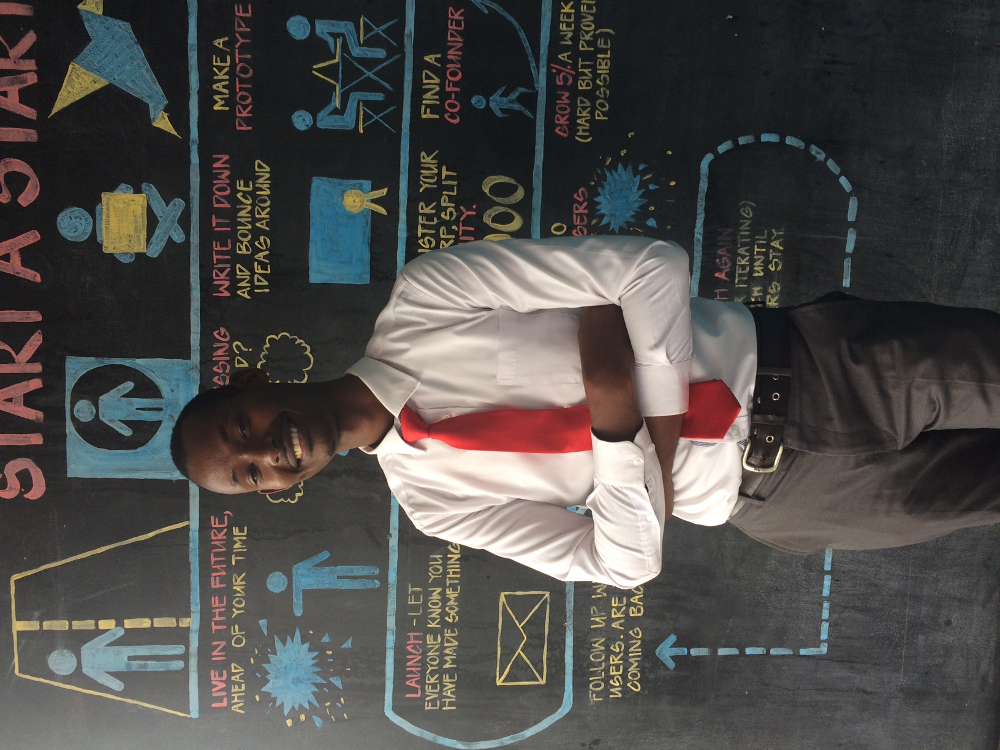

About Mulenzi!

He holds a bachelors degeree in procurement and logistics management from kyambogo university, he has been into voluntary projects majorly for disability inclusion advocacy and worked as a sign language instructor with uganda national association of the Deaf, he has been voluntaring as aspecial needs education teacher and been teaching Deaf in mukono and kayunga, currently doing computer programming course with OUTBOX HUB
In additional he did his internship at the parliament of ugand in the procurement and disposal unit before he joined challenges uganda future makers by standard chartered where he attained a leadership certifacate from chartered management institute.